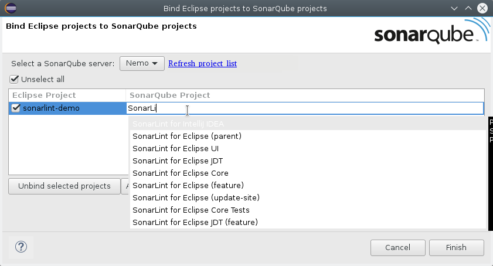
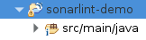
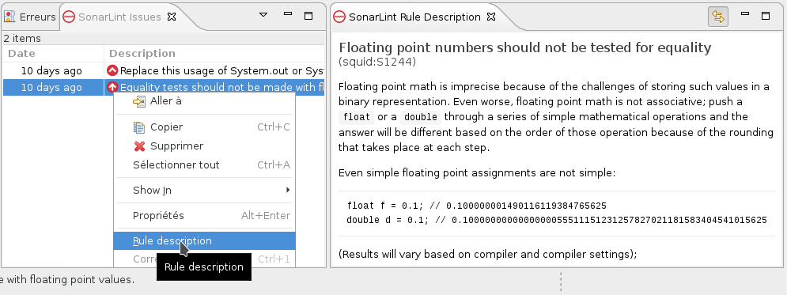

SonarLint offers a fully-integrated user experience in Eclipse-based IDEs. After installing the plugin issues will be reported as Eclipse markers.
SonarLint is free, open source, and available in the Eclipse Marketplace. Note that it requires Java 8 to run.

Connected Mode
With version 2.0+ you can now establish a connection to a SonarQube server (4.5.4+) and bind your Eclipse project to a SonarQube project. This operation will make SonarLint use the analyzers, quality profiles and settings defined on your SonarQube server.
First step is to connect to your SonarQube server:
- In SonarQube server view, right click and choose "New -> Server connection", or directly do "File -> New -> Other... -> SonarLint -> New Server".
- Complete connection details (URL and credentials).
- Test connection
- Click "Finish" to close the wizard and start updating configuration from the server (may take a while)
You can manage your SonarQube server connections in the "SonarQube Servers" view. To manually trigger an update of local configuration (if remote SonarQube configuration has changed): right click on a server and use the "update" action.
Now you can bind one or more Eclipse project(s) to their remote SonarQube pair. Right click on project -> "SonarLint -> Bind with remote SonarQube server..."
You can now use the wizard to find the matching SonarQube project. First try the "auto-bind" feature that will try to find best match based on Eclipse project name. If auto-bind fail you can manually search for a project.
Click on "Finish" to persist the binding. You should now show SonarQube overlay on your bound project icon.
That's it, you can now code and see SonarLint reporting issues based on remote SonarQube configuration.
News
- July 29, 2016 - We released version 2.2.0 of SonarLint for Eclipse with many improvements: Support of Python and updated Java and JavaScript analyzers. File/issue exclusions configured on SonarQube server are now taken into account (in connected mode). Support of custom rules (but plugins have to be updated). Starting from this version, Java 8 is required to run SonarLint.
- June 3, 2016 - We released version 2.1.0 of SonarLint for Eclipse with extended support of SonarQube 4.5.4+ in connected mode. Some SonarSource commercial plugins are also supported. We have also updated Java and JavaScript analyzers to their latest version (Java 3.14 and JavaScript 2.12).
- April 4, 2016 - We released version 2.0.0 of SonarLint for Eclipse with ability to connect to a SonarQube server. We have also updated Java and JavaScript analyzers to their latest version (Java 3.12 and JavaScript 2.11).
- March 2, 2016 - We released bugfix version 1.3.1 of SonarLint for Eclipse.
- February 17, 2016 - We released version 1.3 of SonarLint for Eclipse. The plugin is now fully standalone: there is no more dependency on http://update.sonarlint.org. We removed the quick fix // NOSONAR that was too controversial. Java analyzer is updated to its latest version (3.10). Some rules were added on pom.xml files.
- January 15, 2016 - We have updated Java and JavaScript analyzers to their latest version (Java 3.9 and JavaScript 2.10). Use Help -> Update SonarLint analyzers menu to get them.
- December 16, 2015 - We released version 1.2 of SonarLint for Eclipse. It is possible to see recently introduced issues by displaying the "Date" column in SonarLint issues view. Also there is a quick fix for SonarLint issues to mute them by adding a // NOSONAR comment.
- December 7, 2015 - We released version 1.1 of SonarLint for Eclipse. Updated versions of Java, JavaScript and PHP analyzers: some issues start to be more precisely located on code. Few more rules and many improvements to existing ones. Use Help -> Update SonarLint menu to get new analyzers.
- October 15, 2015 - Today we released version 1.0 of SonarLint for Eclipse. Java, JavaScript and PHP are supported.
Frequently Asked Questions
-
Which languages are supported?
Out of the box: Java, JavaScript, PHP and Python
With the Connected Mode, it adds: ABAP, COBOL, PL/SQL, Swift
-
How to start SonarLint analysis?
SonarLint analysis is automatically triggered by a resource change listener (in short: when a file is modified) and also when you open a file.
If you want to disable the automatic analysis go to project properties: Right click on the project -> SonarLint and uncheck "Run SonarLint automatically"
If automatic analysis is disabled you can manually run SonarLint analysis using context menu on file:

- How can I connect SonarLint to my SonarQube server? - Please use connected mode to connect with a SonarQube server.
-
In Connected Mode will all plugins installed on SonarQube be executed in SonarLint?
SonarLint supports only the SonarSource Analyzers. We plan to quickly add support for custom rules extending the Java, JavaScript and PHP Analyzers.
We don't plan to support plugins running third-party analyzers in order to keep SonarLint as fast as possible.
-
How to see rule description?
Full rule description is available in a dedicated view. You can open it using the context menu in the issues view: 
-
How to exclude files from the analysis?
By default we are excluding derived files. Apart from that all files recognized as a supported language are analyzed. In connected mode you can configure some exlusions on server side.
-
How to open SonarLint console?
SonarLint console allow to see logs of the analysis. This can be useful to understand some technical issues. You can open it from standard Eclipse Console views:

-
How to enable verbose logs?
By default SonarLint console will not display debug logs. You can enable debug logs from SonarLint console:

Contribute
SonarLint for Eclipse is open source under the LGPL v3 license. You can fork us on GitHub, and submit Pull Requests. Feel free to fix bugs or to implement new features.
Feedback
The preferred way to discuss about SonarLint is by posting on the SonarLint Google Group. We are also constantly monitoring questions posted to StackOverflow. For faster answers mark your StackOverflow questions with [SonarLint] and [Eclipse] tags.